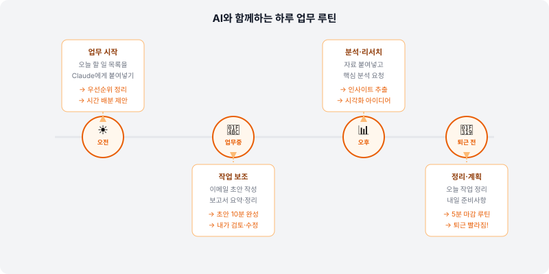

🔄 "AI 써봤는데 유지가 안 돼요"
많은 분들이 AI를 처음 써보고 감탄하다가도, 몇 주 후에는 다시 예전 방식으로 돌아갑니다. 왜 그럴까요? 도구가 불편해서가 아니에요. 습관으로 자리 잡지 않았기 때문이에요.
헬스장 회원권을 끊어도 매일 가지 않으면 소용없듯이, AI도 습관이 되어야 진짜 효과가 납니다. 이 페이지에서는 AI를 일하는 루틴에 자연스럽게 녹이는 방법을 알아볼게요.
🌅 하루 업무 루틴에 AI 넣기
거창하게 시작할 필요 없어요. 이미 하고 있는 업무에 AI를 하나씩 끼워 넣는 거예요.
아침 업무 시작 (15분)
📬 받은 이메일 요약: 긴 이메일을 Claude에 붙여넣고 "핵심 내용과 내가 해야 할 액션만 요약해줘"
📅 오늘 할 일 정리: "오늘 이런 업무가 있는데, 우선순위 정하는 것 도와줘"
문서 작업 중
✍️ 초안 먼저 AI에게: 보고서·기획서를 직접 쓰기 전에 AI 초안을 받고 수정
🔍 내가 쓴 것 검토: 작성 후 "이 글에서 빠진 내용이나 개선할 부분 알려줘"
회의 전후
📋 회의 전 준비: "이 주제로 회의하는데 미리 생각해봐야 할 질문이나 포인트 알려줘"
📝 회의 후 정리: 회의록을 붙여넣고 "결정사항과 액션 아이템만 추출해줘"

📌 "AI 먼저" 트리거 만들기
어떤 상황에서 AI를 쓸지 미리 정해두면 자동으로 습관이 됩니다. 아래에서 나에게 해당하는 것들을 체크해보고, 이번 주부터 실천해보세요.
글쓰기 관련
- 이메일을 쓰기 전 → AI에게 초안 요청
- 보고서 목차를 잡기 전 → AI에게 구조 제안 요청
- 공지사항을 쓰기 전 → AI에게 초안 작성 후 수정
정보 처리 관련
- 긴 이메일을 받았을 때 → AI에게 핵심 요약 요청
- 긴 기사·보고서를 읽어야 할 때 → AI에게 붙여넣고 요약
- 데이터를 엑셀로 정리해야 할 때 → AI에게 정리 방식 조언 요청
아이디어가 필요할 때
- 캠페인 이름이나 슬로건을 고민할 때 → AI와 브레인스토밍
- 발표 내용의 스토리라인을 잡을 때 → AI에게 구성 제안
- 문제 해결 방법이 안 떠오를 때 → AI에게 관점 바꿔서 보기
⚠️ 이런 실수는 하지 마세요
AI 결과물을 검토 없이 그대로 제출하면 오류가 그대로 전달돼요. AI는 초안 도우미지, 최종 판단자가 아닙니다.
모든 업무를 한 번에 AI로 전환하려다 지쳐요. 가장 반복적인 업무 하나부터 시작하세요.
📈 AI 활용 실력을 올리는 3가지 방법
1. 매일 조금씩 실험하기
하루에 한 가지 새로운 방식으로 AI를 써보세요. 오늘은 이메일 초안, 내일은 회의 요약, 모레는 아이디어 발굴. 작은 실험들이 쌓이면 자신만의 활용 패턴이 생겨요.
2. 좋은 프롬프트는 저장해두기
잘 된 프롬프트가 있다면 메모장이나 노션에 저장해두세요. 비슷한 상황에서 다시 쓸 수 있고, 동료와 공유하면 팀 전체가 혜택을 받아요.
3. 결과물을 비교해보기
같은 작업을 AI 없이 한 것과 AI로 한 것을 비교해보세요. 시간이 얼마나 단축됐는지, 품질은 어떤지 확인하면 동기부여가 됩니다.
✅ 이번 주 AI 활용 목표
이번 주에 실천할 항목을 골라보세요. 한 번에 다 할 필요 없어요!